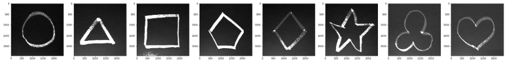
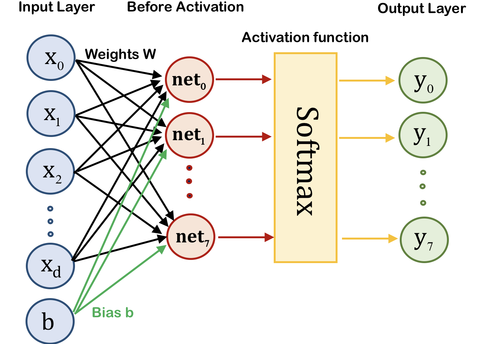
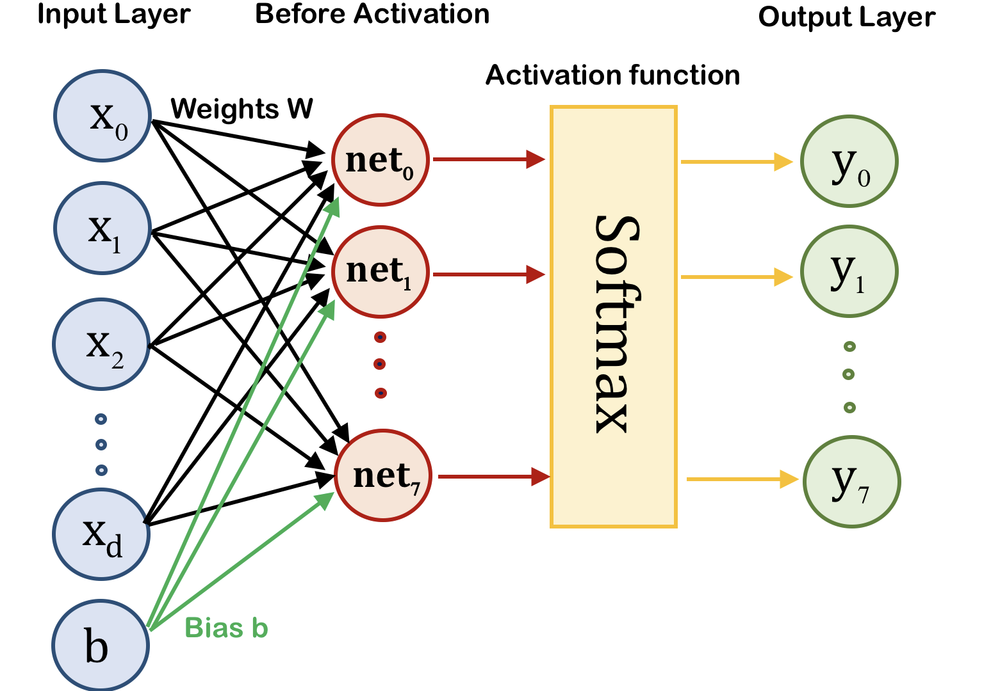

Machine learning is a field in computer science that uses statistical techniques to enables computer systems to
Machine learning is usually advantageous in complex systems where traditional algorithmic methods cannot be easily or even possibly defined.
Data is usually separated into Training set where inputs and outcome (or labels, response, expectations) are known beforehand and Test set where the computers are expected to predict the outcome based on the input.
Generally speaking of the methods in machine learning, if the computer is trained with the knowledge of labels, then it is supervised learning. Otherwise, it is called unsupervised learning.
This project is an investigation into supervised machine learning .
Collecting useful and clean data proves to be a challenging task. For the current project, we have asked 10 volunteers to draw a total of 640 shapes.
Every participant needs to draw 8 shapes for each of the following eight categories: (Circle), Triangle, (Square), Pentagon, Rhombus, (Star), Trefoil, (Heart)
All Images are taken by iPhone (initial total size = 543.4 MB) and then processed into grayscale, dimensionally-reduced numpy packages. (final size = 8.2 MB)
-
Selected unprocessed raw images:

-
Grayscaled images using Python Imaging Library (PIL): [for the moment, color is not a feature!]
 -
Dimensionality reduction of images from 2448 X 2448 = 5992704 pixels to 40 X 40 = 1600 pixels:

Finally, flattening these images as two numpy arrays/packages, data and label :
data.npy label.npy label dictionaryDimensions: data.shape = (640, 1600), label.shape = (640,)
Be free to download and use the datasets. I also developed additional datasets with much-reduced dimensions of 25 X 25 = 625 : data_DIM625.npy label_DIM625.npy
# How to load the dataset:
import numpy as np
data = np.load('./data.npy')
labels = np.load('./label.npy')
# Label Dictionary:
LABEL_DICT={0: 'Circle', 1: 'Heart', 2: 'Pentagon', 3: 'Rhombus', 4: 'Square', 5: 'Star', 6: 'Trefoil', 7: 'Triangle'}
We need to divide all the data and label into training set and test set. Then, machine can be trained by various methods on the training set to make predictions on the test set.
4-fold Cross Validations are also used for each method, in order to obtain a less biased and more accurate measure of each model.
# Use Random Seed to reproduce the performance
np.random.seed(1)
perm = np.random.permutation(640)
# Choose your favorite train-test-split, say 160 test data, 480 train data
trainx = data[perm[0:480],:]
trainy = labels[perm[0:480]]
testx = data[perm[480:640],:]
testy = labels[perm[480:640]]
# Or use sklearn Library
from sklearn.model_selection import train_test_split
trainx, testx, trainy, testy = train_test_split(data, labels, test_size=0.25, random_state=1)
Comparison of varioius machine learning methods used on hand-drawn shape dataset. The winners are Gaussian Generattive Model and Artificial Neural Network (both DNN and CNN are used).
Descriptions of each methods are listed below, along with their 4-fold Cross Validations results.
kNN is probably the simpliest supervised machine learning method.
kNN uses distance function to compute the relative closeness between two image arrays. Then, for each test data, scan all training data to find the closest image array and return its corresponding label. For example,
# My Distance Function
def squared_dist(x,y):
return np.sum(np.square(x-y))
# Find label of closest image in the training set
def find_NN(x):
distances = [squared_dist(x,trainx[i,]) for i in range(len(trainy))]
index = np.argmin(distances)
return trainy[index]
# Or simply use "sklearn.neighbors.BallTree", "sklearn.neighbors.KDTree"
Below is an example of a misclassified pentagon: test image #10 (Pentagon) and its nearest neighbor training image #438 (Circle).
These two images can be confusing for a computer given the small sample size we have.
One can also directly use kNN from sklearn: sklearn.neighbors.BallTree , sklearn.neighbors.KDTree, and achieve more or less the same accuracy. Below is the 4-Fold Cross-Validation with Average error rate ~ 6.56 %.
Generative model uses statistical techniques to find the highest probable label for the test data.
Here, by learning the training data and training label, we generate a statistical multivariate Gaussian distribution for each pattern. Then, for each test data, we compute the probablity for each label according to the distribution, and pick the highest one. This is direct application of Bayes' Theorem.
$$ \text{Probablity}\Big(\text{label}=j\Big|x\Big) = \frac{\text{Probablity}(\text{label}=j)\cdot \text{Probablity}\Big(x\Big|\text{label}=j\Big)}{\text{Probablity}(x)} \quad \propto \quad \text{Probablity}\Big(x\Big|\text{label}=j\Big),$$
where \(\text{Probablity}\Big(x\Big|\text{label}=j\Big)\) is the probability of Gaussian distribution for label j of data x.
One can either use multivariate Gaussian from library, such as from scipy.stats import multivariate_normal, or define your own:
c = 1.0 # some guess for regularization
def fit_generative_model(x,y):
k = 8 # labels 0,1,...,k-1
d = (x.shape)[1] # number of features
mu = np.zeros((k,d))
sigma = np.zeros((k,d,d))
pi = np.zeros(k)
for label in range(0,k):
indices = (y == label)
mu[label] = np.mean(x[indices,:], axis=0)
sigma[label] = np.cov(x[indices,:], rowvar=0, bias=1) + c*np.identity(IMAGE_SIZE**2)
pi[label] = float(sum(indices))/float(len(y))
return mu, sigma, pi
mu, sigma, pi = fit_generative_model(trainx, trainy)
After the fit, mu (\( \mu \)) serves as the "average" or "representative" of all the images of the same kind. Here are the mu for Heart, Diamond, Trefoil, and Triangle respectively.
In practice, GGM turns out amazing in learning the shapes. With a couple of seconds, we reached 159 accurate predictions for the 160 test images in the first train-test-split. Here is the performance in 4-Fold Cross Validations. Average error rate ~ 1.25 %.

Perceptron algorithm uses basic linear algebra. It predicts the label by evaluating the sign of a linear estimator function, so typically used for a simple binary classification:
$$ y = W \cdot \vec{x} + b, \text{ where $W$ is the weight matrix, $\vec{x}$ is an instance from the data, $b$ is the bias.} $$
The predicted label = \(\text{sign}(y)\), and the loss function = \(\text{sign}(y)\) - label, for each data x. We can find the optimal \(W\) and \(b\), by using gradient descent method.
What we have is a multi-class (8 classes) classification problem , so the vanilla Perceptron algorithm is extended to find and return the label with the highest score. One possible classifier can be:
def evaluate_classifier(w,b,x):
k = len(b)
scores = np.zeros(k)
for j in range(k):
scores[j] = np.dot(w[j,:],x) + b[j]
return int(np.argmax(scores))
Then we can train the Perceptron on the training set using gradient descent. For more complicated data, other variants of gradient descent should be used to speed up the training, such as Stochastic gradient descent or mini-batch Stochastic gradient descent. Here, basic gradient descent is sufficient. Convergence is around 8~12 iterations.
def train_multiclass_perceptron(x,y,k=8,n_iters=100):
n,d = x.shape # n = 480, d= 1600
w = np.zeros((k,d)) # w.shape = (8, 1600)
b = np.zeros(k) # b.shape = (8)
done = False
converged = True
iters = 0
np.random.seed(None)
while not done:
done = True
I = np.random.permutation(n)
for j in I:
pred_y = evaluate_classifier(w,b,x[j,:])
true_y = int(y[j])
if pred_y != true_y: # vanilla gradient descent for MP
w[true_y,:] = w[true_y,:] + x[j,:]
b[true_y] = b[true_y] + 1.0
w[pred_y,:] = w[pred_y,:] - x[j,:]
b[pred_y] = b[pred_y] - 1.0
done = False
iters = iters + 1
if iters > n_iters:
done = True
converged = False
if converged:
print("Converged at {} iterations.".format(iters))
else:
print("Failed to converge within {} iterations...".format(n_iters))
return w, b, converged
Despite fast convergences, the accuracy is not very high. Average error rate ~ 8.75 %.

Support Vector Machine is an advanced version of Perceptron algorithm, where margin between labels is maximized. The optimization requires the loss function to be a convex function, which is true for most machine learning scenarios.
The beauty of SVM method is that the final result only depends on the "support vectors", the points on the margins of the decision boundary.
The process can be sped up substantially, using Dual Form of the algorithm, with much reduced dimensionality. One can also use Kernel trick to classify data with quadratic decision boundaries or even higher degree polynomial, as in our quadratic SVM approach below.
The penalty for misclassified points can be tuned via a "slack" variable to improve the performance. Fast Implementation with sklearn:
# Linear SVM Classifier
from sklearn.svm import LinearSVC
C_value = 0.1
model_linear = LinearSVC(loss='hinge', C=C_value)
model_linear.fit(trainx, trainy)
predictions_linear = model_linear.predict(testx)
# Quadratic SVM Classifier
from sklearn.svm import SVC
C_value = 0.1
model_quad = SVC(kernel='poly', degree=2, C=C_value)
model_quad.fit(trainx, trainy)
predictions_quad = model_quad.predict(testx)
Final Results: Linear SVM averaged error rate ~ 7.03 %, while Quadratic SVM averaged error rate ~ 4.22 %.


In our brain, every neuron is connected with many more neurons. Each neuron process the signals from previous neurons and relay the signal to neurons in the next layer, and so forth (left).
 

Neutral network is inspired directly by how neurons pass signals in our brain. In analogy, weights are the length of nerve fiber (axon), activation functions are like the action potential to excite synaptic connections, and so forth. (right)
Above on the right is the model of Densely-connected Neural Network (DNN) that I will use. Every node is connected to every node in the next layer. The internal layer \( z_i = \sum_j W_{i,j} x_j + b_i\) and final output layer \( y =\text{softmax}(\vec{z})_i = \frac{\text{exp}(z_i)}{\sum_j \text{exp}(z_j)} \).
We could write the neural network on our own, but TensorFlow is an amazing open source machine learning framework developed by Google for high performance numerical computation. So we will just use that.
# Creating variables, placeholders, and operations:
import tensorflow as tf
x = tf.placeholder(tf.float32,shape=[None,1600])
W = tf.Variable(tf.zeros([1600,8]))
b = tf.Variable(tf.zeros([8]))
y = tf.matmul(x,W) + b
# Setting loss function and optimizer:
y_true = tf.placeholder(tf.float32,[None,8])
cross_entropy = tf.reduce_mean(tf.nn.softmax_cross_entropy_with_logits(labels=y_true, logits=y))
optimizer = tf.train.GradientDescentOptimizer(learning_rate=0.5)
train = optimizer.minimize(cross_entropy)
# Use One-Hot Encoding and Write customized batch function::
trainy_mod, testy_mod = np.zeros((480,8)), np.zeros((160,8))
for i, label in enumerate(testy):
testy_mod[i, label] = 1
for i, label in enumerate(trainy):
trainy_mod[i, label] = 1
def produce_batch(batch_size=10):
mask = np.random.randint(480, size = batch_size)
return trainx[mask], trainy_mod[mask]
# Training, with maximum 2000 steps, feeding batch size = 10:
steps = []; history = []
with tf.Session() as sess:
sess.run(init)
for step in range(2000):
batch_x , batch_y = produce_batch(batch_size=10)
sess.run(train,feed_dict={x:batch_x,y_true:batch_y})
if step%50 == 0: #test every 50 steps, for plotting results
matches = tf.equal(tf.argmax(y,1),tf.argmax(y_true,1))
acc = tf.reduce_mean(tf.cast(matches,tf.float32))
rate = sess.run(acc,feed_dict={x : testx, y_true : testy_mod})
print('Currently on step: {}\nAccuracy is: {}\n'.format(step, rate))
steps.append(step)
history.append(rate*100)
For DNN: Accuracy stablizes after 550 steps , accuracy rate ~ 84.38 %
We can greatly improve the neural network by using Convolutional Neural Network (CNN). The idea is to render image as two dimensional array and feed into the neural network. In this way, information of neighboring points is saved. Then, apply various filters and train the machine at each layer.
The advantage is phenomenal. CNN accuracy stablizes after around 700 steps , accuracy rate ~ 99.38 %, fluctuations due to batch size, obtainging several 100 % accuracy, earliest at 400 steps.